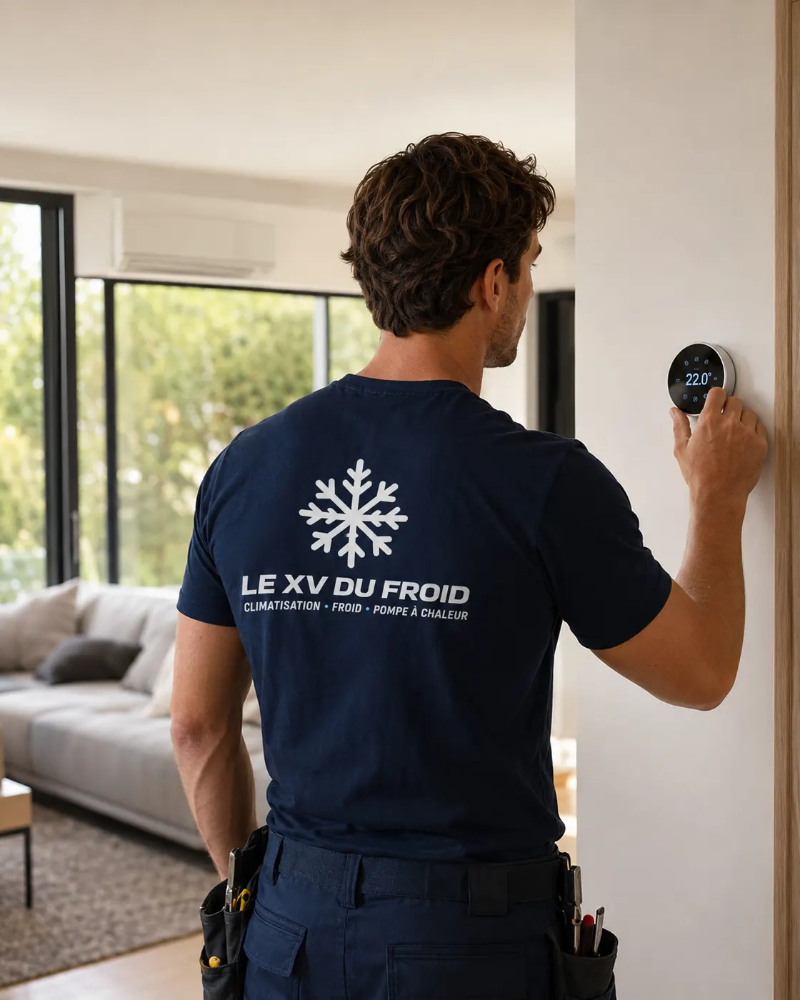

Entretien climatisation Les Mureaux · 78130
Entretien climatisation aux Mureaux : quand les groupes sont sur la façade de l’immeuble
En immeuble, entretenir une clim ne se résume pas à un rendez-vous. Il y a le groupe extérieur sur la façade, le balcon du voisin, le syndic, le gardien. Aux Mureaux, on prépare ces points avant de venir.
- Accès à la façade anticipé
- Un compte rendu par lot
- Syndic et gardien prévenus

En immeuble
Le vrai sujet, c’est l’accès.
Dans une maison, le groupe extérieur est dans le jardin. Dans un immeuble, il est sur un balcon, une loggia, un toit-terrasse ou accroché à la façade. Le technicien doit y accéder en sécurité, ce qui pose parfois plus de questions que l’entretien lui-même.
Avant de fixer un rendez-vous, on demande donc où se trouve le groupe, comment on y arrive, et qui détient la clé ou l’autorisation. Un balcon dans un appartement, c’est simple. Une façade accessible seulement par nacelle, c’est une autre organisation.
On vous guide pour que le jour venu, rien ne bloque.

Groupe sur façade : ce que l’entretien vérifie en plus
Sur façade, le contrôle de la fixation est une partie à part entière. Supports, chevilles, état de la rouille, vibrations : un groupe mal tenu peut transmettre des bruits à tout un étage, voire tomber.
Le technicien regarde aussi l’écoulement de l’eau de condensation. En immeuble, un tuyau qui goutte sur le balcon du dessous provoque vite un litige entre voisins.
Le nettoyage du groupe se fait dans la mesure de ce que l’accès permet, avec protection de la façade.
- Fixation et supports contrôlés
- Écoulement vérifié
- Nettoyage adapté à l’accès
Syndic et voisins
Ce que dit le règlement de copropriété
Beaucoup de règlements de copropriété encadrent l’installation d’un groupe extérieur, mais pas son entretien. Si l’appareil est déjà là, il est normal que son propriétaire le fasse suivre.
Un balcon privatif ne pose pas de difficulté. Un toit ou une cour commune demande de prévenir le syndic ou le gardien, parfois d’obtenir une clé ou une autorisation d’accès ponctuelle.
Pour toute question juridique, le syndic ou un professionnel du droit reste l’interlocuteur. Nous veillons seulement à ce que la visite se passe sans gêner personne.
Prévenir le gardien trois ou quatre jours avant évite la porte fermée le jour du rendez-vous.
Ce qui est fait
Entretien climatisation Les Mureaux : le passage dans un appartement
Pour un entretien climatisation Les Mureaux en appartement, on protège le sol, on dépose la façade de l’unité intérieure et on lave le filtre. La turbine, le bac et l’évacuation sont inspectés.
Le technicien passe ensuite sur le balcon ou la loggia pour le groupe : propreté de l’échangeur, ventilateur, connexions, fixation. Les mesures de fonctionnement complètent le contrôle.
Le compte rendu mentionne le lot ou l’étage, ce qui sert si un autre occupant de l’immeuble a le même modèle.
Avant le rendez-vous
À régler côté copropriété
Quelques minutes de préparation qui évitent une visite perdue.
- Localiser le groupe : balcon, loggia, toit, cour, façade.
- Prévenir le gardien : date, durée, nom de l’entreprise.
- Dégager l’accès : plantes, étendoirs, mobilier de balcon.
- Connaître le voisin du dessous : une goutte sur son balcon est vite un sujet.
- Prévoir un référent : quelqu’un qui ouvre et signe le compte rendu.
Nettoyage
Nettoyage climatisation Les Mureaux : pollution et poussière
Dans une ville traversée par des axes routiers et des voies ferrées, les filtres et échangeurs s’empoussièrent plus vite. Un lavage de filtre mensuel en saison d’usage compense en grande partie.
Le nettoyage de la turbine se prévoit avant l’été si l’air a une odeur ou si le débit semble faible.
Questions
Entretien de clim en immeuble aux Mureaux : vos questions
Dois-je prévenir le syndic pour un entretien ?
Si le groupe est sur une partie commune ou si l’accès passe par une partie commune, oui. Pour un balcon privatif, une simple information au gardien suffit souvent.
Mon groupe est sur le toit, peut-on le nettoyer ?
Oui, si l’accès est sécurisé. On demande la clé du toit et on s’organise avec le gardien.
Un entretien clim Les Mureaux peut-il couvrir tout un immeuble en une journée ?
Selon le nombre de lots. On peut regrouper plusieurs rendez-vous le même jour pour limiter les déplacements.
L’entretien climatisation Les Mureaux est-il obligatoire ?
Pour les petits appareils domestiques, pas de visite imposée par la loi. Il reste conseillé pour la durée de vie et la garantie constructeur.
Mon voisin se plaint de l’eau de mon groupe, que faire ?
Faites contrôler l’évacuation des condensats. Un tuyau bouché ou mal orienté se règle en peu de temps.
Les appareils posés par d’autres sont-ils entretenus ?
Oui, quelle que soit la marque ou l’installateur d’origine.
Dans votre ville
Les autres services à Les Mureaux
Un besoin différent, une page différente : dépannage, entretien, installation ou urgence.
Autour de chez vous
Entretien de climatisation dans les villes voisines
Si vous êtes à la limite de deux communes, lisez aussi la page d’à côté.
- Entretien climatisation Limay : un appareil posé par un autre installateur
- Entretien climatisation Poissy : clim réversible, révision avant l’hiver
- Climatisation Conflans-Sainte-Honorine : entretien et nettoyage
- Entretien climatisation Mantes-la-Jolie : ce que dit la réglementation
- Entretien climatisation Andrésy : nettoyer ses filtres soi-même, chaque mois
- Entretien climatisation Rambouillet : groupe extérieur, feuilles, mousse et vibrations
- Entretien climatisation Maisons-Laffitte : remise en route d’une résidence secondaire
- Entretien climatisation Plaisir : bureaux, boutiques et petits locaux d’activité
- Entretien climatisation Sartrouville : échangeur, bac à condensats et nettoyage
À côté
D’autres besoins dans les communes voisines
Chaque ville a ses pages.
Nos services
Aller plus loin sur la climatisation
Les pages du site qui complètent celle-ci : services, guides pratiques et devis.
- Dépannage climatisation en Île-de-France
- Installation de climatisation : split, gainable, monobloc
- Entretien de climatisation et de clim réversible
- Demander un devis climatisation gratuit
- Toutes nos zones d’intervention
- Climatisation en appartement : règles et solutions
- Fuite d’eau d’un climatiseur : causes et solutions
Où on intervient
Les Mureaux et communes voisines
Le centre-ville autour de la gare, les ensembles résidentiels et les quartiers pavillonnaires, ainsi que Aubergenville, Meulan-en-Yvelines, Flins-sur-Seine et Verneuil-sur-Seine.
Fixer une visiteÀ lire aussi
Autour des Mureaux
Pages voisines : climatisation Limay, climatisation Poissy, climatisation Mantes-la-Jolie.
Transparence
Un devis clair avant toute intervention.
Vous savez ce qui est prévu, pourquoi c’est nécessaire et à quel tarif avant que le technicien commence. Puis contrôles et essais avant son départ.